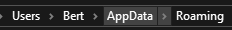
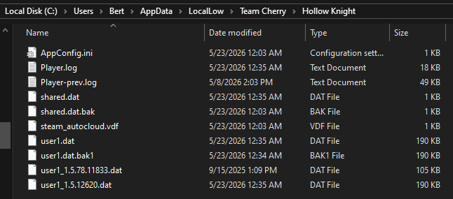
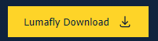
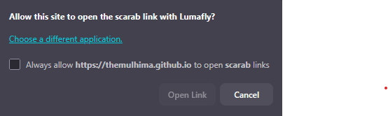
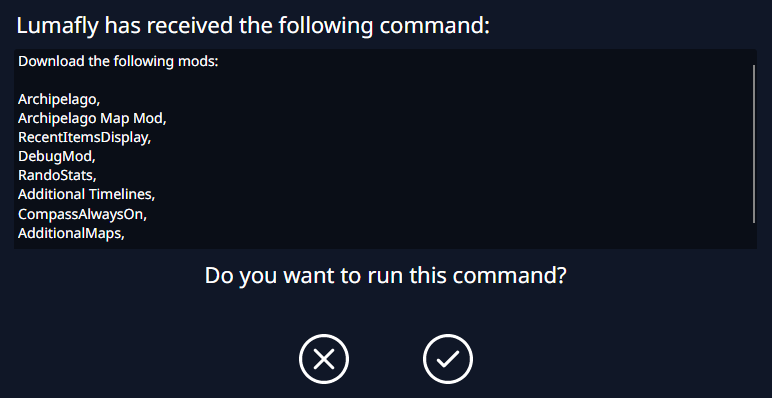

games
games
Hollow Knight Setup Guide
Requirements
- Lumafly
- Hollow Knight on steam
Backing up saves (optional)
It shouldn't be necessary but to backup your saves:
- Open windows bar and type %appdata%
-
This will open your roaming folder so go up one folder level by clicking AppData

or using the button. -
Navigate to LocalLow > Team Cherry > Hollow Knight

- Save all the files in here to some other location on your computer as a backup
Installing Archipelago mod on Lumafly
-
Go to the
Lumafly
website and select

-
Run Lumafly.exe and it will prompt you to confirm the Hollow Knight filepath
Note: It should autofind it but if not you will need to point Lumafly to your install folder. -
Go to the
Archipelago Randomizer Modpack
install page and you will see a pop-up asking to open the link with Lumafly

- Click into that box and then after a second the link will light up and you can select "Open Link"
-
Allow Lumafly to run the commands

- Now you're all set on installing. Once it's time to play open Lumafly and select "Launch Modded Game"
Setting up your randmoizer config (YAML SETUP)
What is a YAML?
YAML is just the config file that will tell the Archipelago mod all settings to randomize or change for your game. The host of your game (probably Bert) will need a YAML file from each player in order to generate the multi-world.
How do I set it up?
- Go to the official options page for Hollow Knight
- Enter a Player Name. This doesn't need to be your in-game name, it just needs to be unique to our other worlds (so don't call it Edwin if you are playing with him too)
-
Select whatever settings you want. You can make it as easy or hard as you want here.
Note: HIGHLY encouraged to read the recommended options section before changing "Progression Balancing" -
Scroll to the bottom and export your YAML based on your gametype
- For multi-worlds select

- For single-player you can generate your game using

- For multi-worlds select
- If playing a multi-world send your YAML file to whoever is hosting your game.
Recommended Options
This section is designed for non-experts at Hollow Knight to help make sure they don't build a
randomizer that requires speedrunner knowledge to beat.
You can also hover over the (?) on the options page for details on any of the settings,
these are just some notes on the important ones.
-
Progression Balancing
- This slider basically determines how quickly you get "major" checks. I highly recommend leaving at 50 but if you want to progress in your game a little more quickly you can increase it slightly. e.g. Setting to 99 caused a DS3 run to have all lord souls within the first hour of the run (boring).
-
Accessibility
- Recommend leaving at Full unless you know a bunch of sequence breaks/tricks and are really good at combat.
-
Goal
- Recommend leaving at Any so you don't have to worry about RNG locking your required ending behind a bunch of checks.
-
Grub Hunt Goal
- Recommend lowering this to at least 40, otherwise could get stuck needing everyone else to 100% their games to get your completion.
-
Randomize Grubs
- Definitely recommend to enable this (disabled by default) if grubs is a win option for you.
-
Randomize Nail
- A really funny one but probably not recommended for a first playthrough as you could play significant portions of the game with only being able to swipe in one direction if at all.
-
Options from Precise Movement to Difficult Skips
- All of these options add sequence break or difficult tricks into the logic of the game so do not enable them unless you know how to do said trick.
-
Death Link
- I mean c'mon. Yes.
-
Deathlink Shade Handling
- HIGHLY recommend "Shade" option as it will mean you only lose geo on your on deaths but deathlink still spawns a shade. If you want to prevent any potential geo loss from deathlink select "Shadeless" instead. Don't do "Vanilla" unless you really trust your friends to not die or if you just plan on never having money.
joining an archipelago game
- Start the game after installing all necessary mods.
- Create a new save game.
- Select the Archipelago game mode from the mode selection screen.
- If Bert is hosting go to the Current Room to find the server settings to enter. Otherwise ask your host for the settings.
- Hit Start to begin the game. The game will stall for a few seconds while it does all item placements.
- The game will immediately drop you into the randomized game.